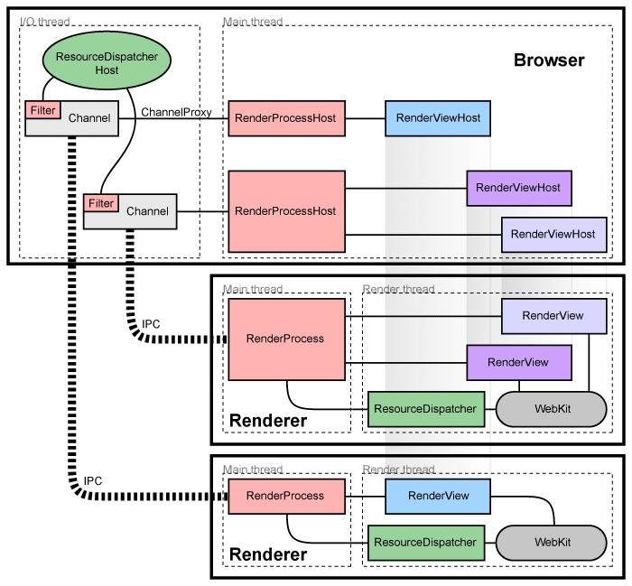

Chromium-Multi-Process-Arch
Table of Contents
1. Problem
Chromium’s architecture aims for this more robust design.
Chromium use Multi Process Arch. It put each of applications into a seperate process. Browser will not crashes or hangs by misbehaving applications, of course another applications are also.
2. Architectural Overview
- browser process: runs the UI and manages renderer and other processes.
renderer processes: handle web content, use the Blink open-source layout engin for interpreting and laying out HTML.
More information in Chromium-Renderer-Process.

2.1. Managing render processes
Browser process maintains a corresponding RenderProcessHost for each renderer process.
Each renderer process has a global RenderProcess manages communication with Browser process and maintain global state.
3. Components and interfaces
In the renderer process:
- RenderProcess: Handle IPC
- RenderFrame: Communicates with its corresponding RenderFrameHost in the browser process (via Mojo).
In the browser process:
- Browser object represents a top-level browser window.
- RenderProcessHost: Handle IPC with corresponding Renderer Process.
- RenderFrameHost: encapsulates communication with the RenderFrame.
- RenderWidgetHost: Handles the input and painting for RenderWidget in the browser.
4. Sharing the renderer process
Sometimes it is necessary or desirable to share the Renderer process between tabs.
Chromium provide capabilities to achieve such requirement.
More details in Chromium-Process-Models.
5. Sandboxing the renderer
Each Renderer reside in a seperate process which provide a way to restrict it’s access to resources by sandboxing (Chromium-Sandboxing).
6. How Browser boot named tasks
BrowserMain() BrowserMainRunnerImpl::Initialize() BrowserMainLoop::CreateStartupTasks() BrowserMainLoop:PostCreateThreads() BrowserMainLoop::PostCreateThreadsImpl() … BrowserChildProcessHostImpl::LaunchWithoutExtraCommandLineSwitches() called by GpuSandboxedProcessLanucherDelegate
6.1. How Renderer is spawn
In short, Renderer is created by RenderProcessHost which use ChildProcessLauncher to create Render process asynchronously on LauncherThread.
Following section is a stack trace where RenderProcessHost create Render process.
Top of stack is where render process crated. The whole stack shows the path of browser initialize renderer.
content::RenderProcessHostImpl::Init() content::SpareRenderProcessHostManager::WarmupSpareRenderProcessHost(content::BrowserContext *) content::SpareRenderProcessHostManager::PrepareForFutureRequests(content::BrowserContext *, std::__Cr::optional<base::TimeDelta>) content::RenderProcessHostImpl::NotifySpareManagerAboutRecentlyUsedSiteInstance(content::SiteInstance *, bool) content::RenderFrameHostManager::GetSiteInstanceForNavigation(const content::UrlInfo &, content::SiteInstanceImpl *, content::SiteInstanceImpl *, content::SiteInstanceImpl *, ui::PageTransition, content::NavigationRequest::ErrorPageProcess, bool, bool, content::RenderFrameHostManager::IsSameSiteGetter &, bool, bool, bool, content::CoopSwapResult, bool, bool, content::BrowsingContextGroupSwap *, std::__Cr::basic_string<char,std::__Cr::char_traits<char>,std::__Cr::allocator<char>> *) content::RenderFrameHostManager::GetSiteInstanceForNavigationRequest(content::NavigationRequest *, content::RenderFrameHostManager::IsSameSiteGetter &, content::BrowsingContextGroupSwap *, std::__Cr::basic_string<char,std::__Cr::char_traits<char>,std::__Cr::allocator<char>> *) content::RenderFrameHostManager::GetFrameHostForNavigation(content::NavigationRequest *, content::BrowsingContextGroupSwap *, std::__Cr::basic_string<char,std::__Cr::char_traits<char>,std::__Cr::allocator<char>> *) content::RenderFrameHostManager::DidCreateNavigationRequest(content::NavigationRequest *) content::FrameTreeNode::TakeNavigationRequest(std::__Cr::unique_ptr<content::NavigationRequest,std::__Cr::default_delete<content::NavigationRequest>>) content::Navigator::Navigate(std::__Cr::unique_ptr<content::NavigationRequest,std::__Cr::default_delete<content::NavigationRequest>>, content::ReloadType) content::NavigationControllerImpl::NavigateWithoutEntry(const content::NavigationController::LoadURLParams &) content::NavigationControllerImpl::LoadURLWithParams(const content::NavigationController::LoadURLParams &) `anonymous namespace'::LoadURLInContents(content::WebContents *, const GURL &, NavigateParams *) Navigate(NavigateParams *) chrome::AddAndReturnTabAt(Browser *, const GURL &, int, bool, std::__Cr::optional<tab_groups::TabGroupId>) chrome::AddTabAt(Browser *, const GURL &, int, bool, std::__Cr::optional<tab_groups::TabGroupId>) StartupBrowserCreatorImpl::OpenTabsInBrowser(Browser *, chrome::startup::IsProcessStartup, const std::__Cr::vector<StartupTab,std::__Cr::allocator<StartupTab>> &) StartupBrowserCreatorImpl::RestoreOrCreateBrowser(const std::__Cr::vector<StartupTab,std::__Cr::allocator<StartupTab>> &, StartupBrowserCreatorImpl::BrowserOpenBehavior, unsigned int, chrome::startup::IsProcessStartup, bool) StartupBrowserCreatorImpl::DetermineURLsAndLaunch(chrome::startup::IsProcessStartup, bool) StartupBrowserCreatorImpl::Launch(Profile *, chrome::startup::IsProcessStartup, std::__Cr::unique_ptr<OldLaunchModeRecorder,std::__Cr::default_delete<OldLaunchModeRecorder>>, bool) StartupBrowserCreator::LaunchBrowser(const base::CommandLine &, Profile *, const base::FilePath &, chrome::startup::IsProcessStartup, chrome::startup::IsFirstRun, std::__Cr::unique_ptr<OldLaunchModeRecorder,std::__Cr::default_delete<OldLaunchModeRecorder>>, bool) StartupBrowserCreator::ProcessLastOpenedProfiles(const base::CommandLine &, const base::FilePath &, chrome::startup::IsProcessStartup, chrome::startup::IsFirstRun, Profile *, const std::__Cr::vector<Profile *,std::__Cr::allocator<Profile *>> &) StartupBrowserCreator::LaunchBrowserForLastProfiles(const base::CommandLine &, const base::FilePath &, chrome::startup::IsProcessStartup, chrome::startup::IsFirstRun, StartupProfileInfo, const std::__Cr::vector<Profile *,std::__Cr::allocator<Profile *>> &, bool) StartupBrowserCreator::ProcessCmdLineImpl(const base::CommandLine &, const base::FilePath &, chrome::startup::IsProcessStartup, StartupProfileInfo, const std::__Cr::vector<Profile *,std::__Cr::allocator<Profile *>> &) StartupBrowserCreator::Start(const base::CommandLine &, const base::FilePath &, StartupProfileInfo, const std::__Cr::vector<Profile *,std::__Cr::allocator<Profile *>> &) ChromeBrowserMainParts::PreMainMessageLoopRunImpl() ChromeBrowserMainParts::PreMainMessageLoopRun() content::BrowserMainLoop::PreMainMessageLoopRun() base::internal::DecayedFunctorTraits<int (content::BrowserMainLoop::*)(),content::BrowserMainLoop *>::Invoke<int (content::BrowserMainLoop::*)(),content::BrowserMainLoop *>(int(content::BrowserMainLoop::*)(), content::BrowserMainLoop * &&) base::internal::InvokeHelper<0,base::internal::FunctorTraits<int (content::BrowserMainLoop::*&&)(),content::BrowserMainLoop *>,int,0>::MakeItSo<int (content::BrowserMainLoop::*)(),std::__Cr::tuple<base::internal::UnretainedWrapper<content::BrowserMainLoop,base::unretained_traits::MayNotDangle,0>>>(int(content::BrowserMainLoop::*)() &&, std::__Cr::tuple<base::internal::UnretainedWrapper<content::BrowserMainLoop,base::unretained_traits::MayNotDangle,0>> &&) base::internal::Invoker<base::internal::FunctorTraits<int (content::BrowserMainLoop::*&&)(),content::BrowserMainLoop *>,base::internal::BindState<1,1,0,int (content::BrowserMainLoop::*)(),base::internal::UnretainedWrapper<content::BrowserMainLoop,base::unretained_traits::MayNotDangle,0>>,int ()>::RunImpl<int (content::BrowserMainLoop::*)(),std::__Cr::tuple<base::internal::UnretainedWrapper<content::BrowserMainLoop,base::unretained_traits::MayNotDangle,0>>,0>(int(content::BrowserMainLoop::*)() &&, std::__Cr::tuple<base::internal::UnretainedWrapper<content::BrowserMainLoop,base::unretained_traits::MayNotDangle,0>> &&, std::__Cr::integer_sequence<unsigned long long,0>) base::internal::Invoker<base::internal::FunctorTraits<int (content::BrowserMainLoop::*&&)(),content::BrowserMainLoop *>,base::internal::BindState<1,1,0,int (content::BrowserMainLoop::*)(),base::internal::UnretainedWrapper<content::BrowserMainLoop,base::unretained_traits::MayNotDangle,0>>,int ()>::RunOnce(base::internal::BindStateBase *) base::OnceCallback<int ()>::Run() content::StartupTaskRunner::RunAllTasksNow() content::BrowserMainLoop::CreateStartupTasks() content::BrowserMainRunnerImpl::Initialize(content::MainFunctionParams) content::BrowserMain(content::MainFunctionParams) content::RunBrowserProcessMain(content::MainFunctionParams, content::ContentMainDelegate *) content::ContentMainRunnerImpl::RunBrowser(content::MainFunctionParams, bool) content::ContentMainRunnerImpl::Run() content::RunContentProcess(content::ContentMainParams, content::ContentMainRunner *) content::ContentMain(content::ContentMainParams) ChromeMain(HINSTANCE__ *, sandbox::SandboxInterfaceInfo *, __int64) MainDllLoader::Launch(HINSTANCE__ *, base::TimeTicks) wWinMain(HINSTANCE__ *, HINSTANCE__ *, wchar_t *, int) [外部代码]